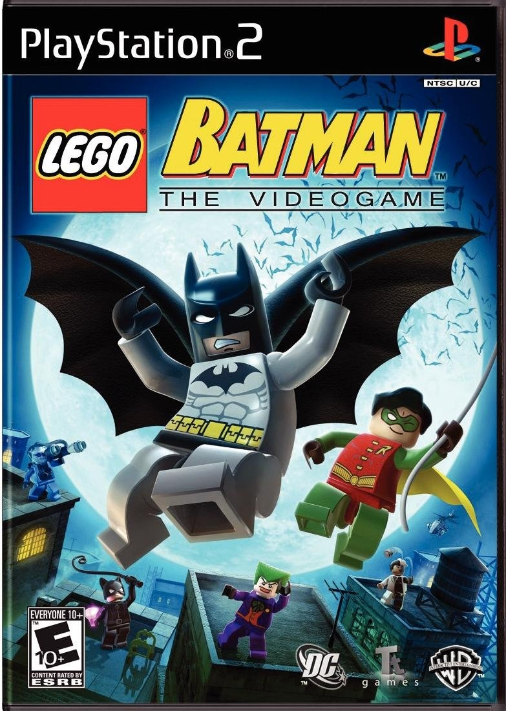

Sinopse
LEGO Batman: The Videogame é um jogo de ação e plataforma que coloca os jogadores no controle de Batman e Robin enquanto enfrentam os maiores vilões de Gotham City. Utilizando o icônico estilo LEGO, o jogo mistura humor, ação e quebra-cabeças em uma aventura envolvente e divertida para todas as idades.
O diferencial do jogo é a possibilidade de jogar tanto do lado dos heróis quanto dos vilões, oferecendo duas campanhas distintas com desafios variados. Cada personagem tem habilidades únicas, o que exige cooperação e estratégia para superar os obstáculos das fases.
Características Principais
- Jogue com mais de 40 personagens do universo Batman
- Modo cooperativo local para dois jogadores
- Campanhas separadas para heróis e vilões
- Ambientes interativos construídos com peças LEGO
- Veículos clássicos como o Batmóvel e o Batplano
- Estilo visual cômico e acessível para todas as idades